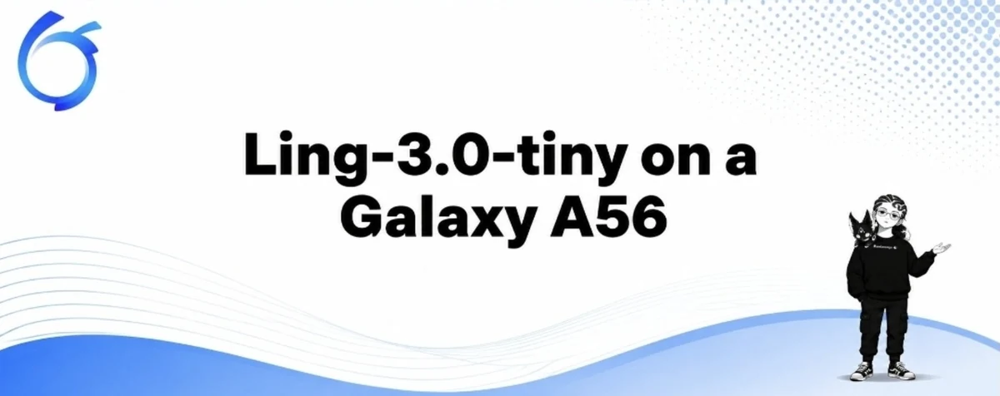
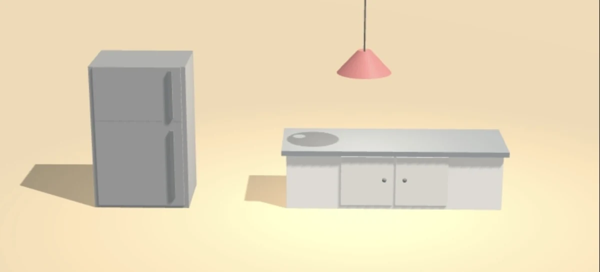
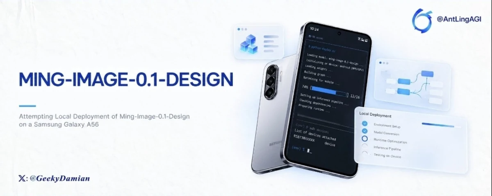
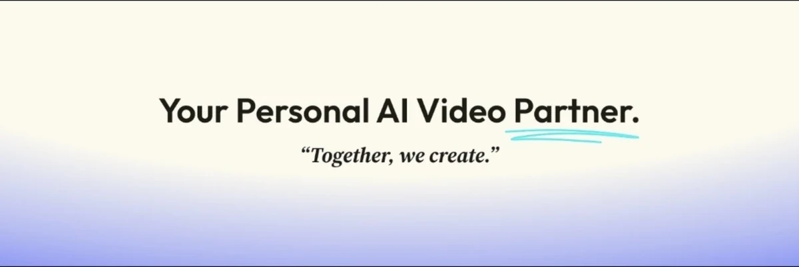
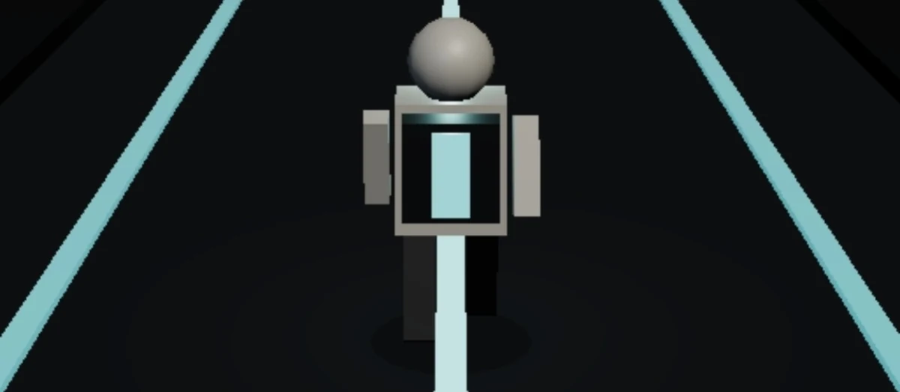

ARTICLE
Ling-3.0-tiny on a Galaxy A56
local deploymentof Ling-3.0-tiny using termux, documented experience
I write about AI, RWA and emerging technology, research emerging systems and build things while figuring out how they work.
My work sits around AI, Web3, technical writing, research, storytelling and the occasional experiment that probably started with “I wonder if I can build this.”
Curiosity is what drives my work.
I ask questions, research and get hands-on where I can. I write to make what I learn easier to understand, and build to see where theory meets reality. I'm comfortable figuring things out along the way and changing my mind when the evidence gives me a reason to.
Making sure my readers understand what I'm sharing is a priority for me.
Tech

local deploymentof Ling-3.0-tiny using termux, documented experience



